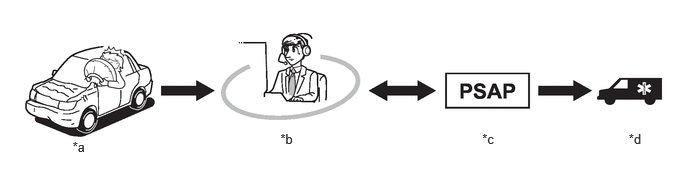
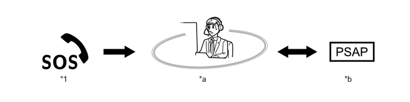
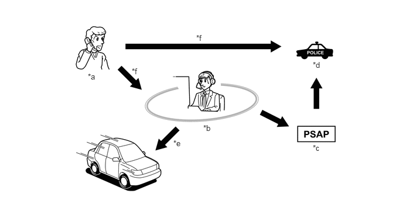
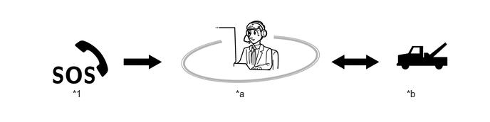

- Connects to the call center and allows the driver to speak with the call center advisor when the Automatic Collision Notification (ACN) service, Emergency Assistance button (SOS) service or Enhanced Roadside Assistance service is active.
- Sends the exact location of the stolen vehicle to the call center based on the current vehicle location obtained by the GNSS when the stolen vehicle location service is active.
- The cellular phone module makes or receives calls.
- The DCM receives signals from the GNSS antenna, calculates the position of the vehicle and transmits it to the call center.
- Controls the on/off and blinking actions of the manual (SOS) switch indicator.
- Dims the manual (SOS) switch indicator when the taillight relay on signal is received.
- Sends the call center advisor's voice and voice prompts to the front No. 2 speaker assembly RH.
| Last Modified: 10-07-2025 | 6.11:8.1.0 | Doc ID: NM100000002GLCT |
| Model Year Start: 2024 | Model: Tacoma | Prod Date Range: [12/2023 - ] |
| Title: CELLULAR COMMUNICATION: SAFETY CONNECT SYSTEM: SAFETY CONNECT CONTROL; 2024 - 2026 MY Tacoma Tacoma HV [12/2023 - ] | ||
SAFETY CONNECT CONTROL
FUNCTION OF MAIN COMPONENTS
(a) The main components in the safety connect system have the following functions:
|
Component |
Function |
||
|---|---|---|---|
| *: Models with 10 speakers | |||
|
Map Light Assembly |
Manual (SOS) Switch |
When pressed, allows the driver to connect to and communicate with the call center as an emergency assistance button (SOS) service or enhanced roadside assistance service. |
|
|
Manual (SOS) Switch Indicator |
Green |
Illuminates, blinks or turns off depending on the conditions when the Safety Connect Service is activated, operating, malfunctioning, during a call with the call center or the modes it is in. |
|
|
Red |
|||
|
Telephone Microphone Assembly |
Receives the user's voice through the microphone module. |
||
|
DCM (Telephone Transceiver) |
|
||
|
Back-up Battery (Mobilephone Battery) |
Is built into the DCM and supplies power to the DCM when the Automatic Collision Notification (ACN) service is activated and the vehicle battery cannot supply power. |
||
|
Telephone Antenna (Roof Antenna Assembly) |
Telephone Antenna (Main) |
|
|
|
Telephone and GNSS Antenna (Navigation Antenna Assembly) |
GNSS Antenna |
Receives signals from GNSS satellites and transmits these signals to the DCM. |
|
|
Telephone Antenna (Sub) |
Is a cellular phone antenna which is compatible with the reception of frequency bands of cellular phones. It receives signals from the call center. |
||
|
Stereo Component Amplifier Assembly* |
Sends the call center advisor's voice to the front No. 2 speaker assembly RH, and inputs the mute signal from the DCM to mute any audio sound. |
||
|
Front No. 2 Speaker Assembly RH |
Outputs the call center advisor's voice. |
||
|
Audio Head Unit (Radio and Display Receiver Assembly) |
Receives microphone voice signals from the DCM. |
||
|
Airbag ECU (Airbag ECU Assembly) |
Sends an airbag deployment or collision detection signal to the DCM. |
||
FUNCTION
(a) Automatic Collision Notification Service
(1) In the event of an accident in which any of the airbags is deployed or when a severe collision occurs, upon receiving a collision detection signal from the airbag ECU, the DCM automatically makes an emergency call and transmits the vehicle position and user information to the call center. Then, the line will be automatically connected to the call center and the driver can speak with the call center advisor. If the driver is unable to communicate, the call center advisor will alert the PSAP nearest to the vehicle, explain the situation, and request dispatching emergency services.
|
*a |
Airbag Deployment or Collision Detection |
*b |
Call Center |
|
*c |
Public Safety Answering Point (911 Emergency Services) |
*d |
Ambulance |
(b) Emergency Assistance Button (SOS) Service
(1) When the manual (SOS) switch is used in an on-road emergency, a call center advisor will locate the vehicle, judge the level of the emergency, and then offer emergency services by contacting a PSAP if it is appropriate to the situation.
|
*1 |
Manual (SOS) Switch |
- |
- |
|
*a |
Call Center |
*b |
Public Safety Answering Point (911 Emergency Services) |
(c) Stolen Vehicle Location Service
(1) In the event of vehicle theft, the user needs to alert the police and then call the call center. A call center advisor will connect to the stolen vehicle and track the vehicle based on the current vehicle location and speed obtained by the GNSS. The call center advisor will also alert the police where required.
|
*a |
Vehicle Stolen |
*b |
Call Center |
|
*c |
Public Safety Answering Point (911 Emergency Services) |
*d |
Police |
|
*e |
Track the Stolen Vehicle |
*f |
Alert |
(d) Enhanced Roadside Assistance Service
(1) The Enhanced Roadside Assistance service adds GNSS data to the Toyota roadside service. Pressing the manual (SOS) switch will contact the call center and enable a wide range of help, such as towing, flat tire assistance, etc.
|
*1 |
Manual (SOS) Switch |
- |
- |
|
*a |
Call Center |
*b |
Roadside Assistance Service |
(e) Safety Connect Mode
(1) There are 2 modes depending on the subscription status. The available services vary depending on the mode accordingly.
|
Subscription Status |
Mode Type |
Available Services |
|---|---|---|
|
Before Subscription |
Shipping Mode*1 |
No services |
|
After Subscription |
Active Mode*2 |
Automatic Collision Notification (ACN) Service |
|
Stolen Vehicle Location Service |
||
|
Emergency Assistance Button (SOS) Service |
||
|
Roadside Assistance Service |
HINT:
*1: This is the mode during shipping or when service contract is inactive. With certain exceptions, services will not operate. Furthermore, services in which the audio head unit uses the DCM circuit also will not operate.
*2: In this mode, all services are able to be operated. However, some services may not be available depending on the contract status.
(f) Voice Guidance Function
(1) The following voice messages are played depending on the situation.
|
Voice Prompt |
Usage Condition |
|---|---|
|
"Communication module failure detected, please contact your dealer" |
When system detects LED failure (Red only). System shall play this prompt once per IG-ON until the problem is fixed. |
|
"Connecting to the call center". |
The DCM enrollment call start. |
|
"Communication module activation failed" |
The DCM activation failure. |
|
"Communication module activation completed" |
The DCM activation completed normally. |
|
"Please make sure you are in an area with good cellular coverage and try again. If you continue to receive this message, contact your dealer." |
Follows activation failure prompt (Communication module activation failed). |
|
"Unable to connect to the call center" |
When system is not able to connect to activation call center. |
|
"Impact Detected" |
When DCM receives a collision detection signal from airbag ECU. |
|
"Connecting to the emergency call center" |
When emergency call initiated to call center. |
|
"Unable to connect to the emergency call center" |
The DCM cannot connect to emergency call center. |
|
"To cancel, please press the button again" |
After SOS call initiation. |
|
"Emergency call cancelled" |
After emergency call is cancelled. |
|
"The system will try again" |
When system initiates call retry. |
|
"Incoming call from the emergency call center. the call will be answered automatically." |
On receiving incoming Telematics Service Provider (TSP) operator following the disconnection of an ACN/SOS call. |
|
"Emergency call disconnected" |
Involuntary call disconnection. |
|
"To activate, please press the button again within 5 seconds." |
This voice prompt is instruction for enrollment. |
|
"Safety connect is not active." |
When safety connect is not active. |
|
"Communication module is not active" |
When DCM is not active (shipping mode or active mode before customer account management). |
|
"To sign up for service please call 1-877-201-0287 and a representative will assist you" |
Deactivated DCM for Toyota vehicles. |
|
"To sign up for service please call 1-877-201-0262 and a representative will assist you" |
Deactivated DCM for brand unknown vehicles. |
|
"Call disconnected" |
Involuntary call disconnection of an enrollment call. |
|
"Call cancelled" |
After enrollment call is cancelled. |
|
Start/Notification beep |
For HMI function notifications. |
DIAGNOSIS
(a) If there is a malfunction in the system, the DCM stores Diagnostic Trouble Codes (DTCs) in its memory. For details, refer to the Repair Manual.